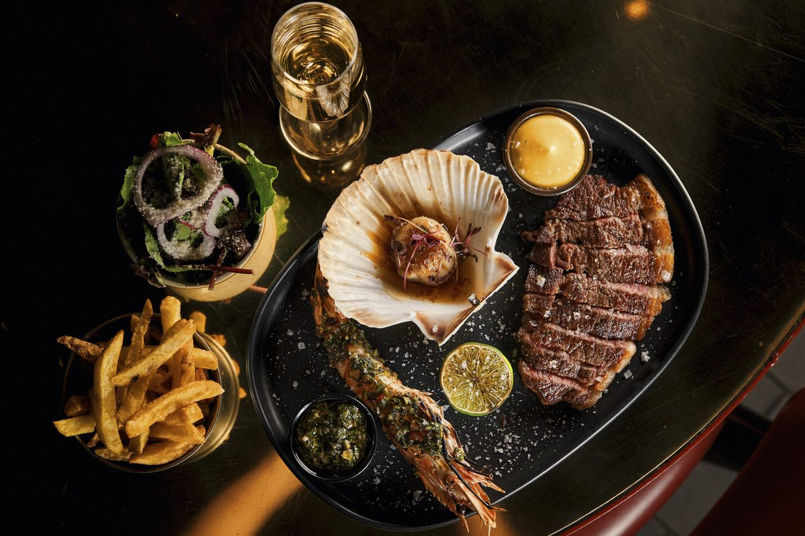
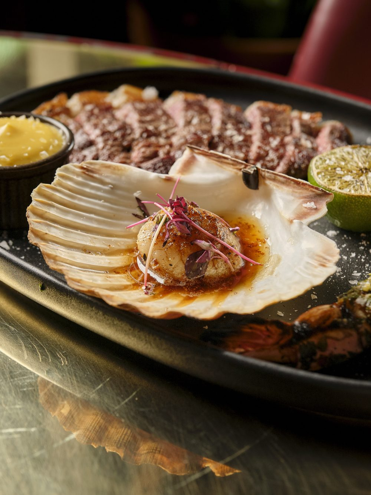
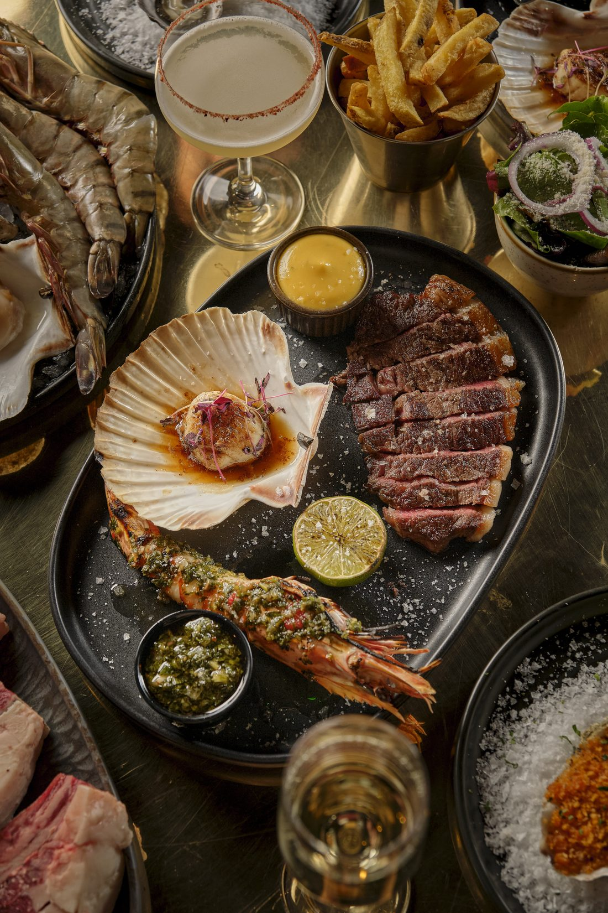
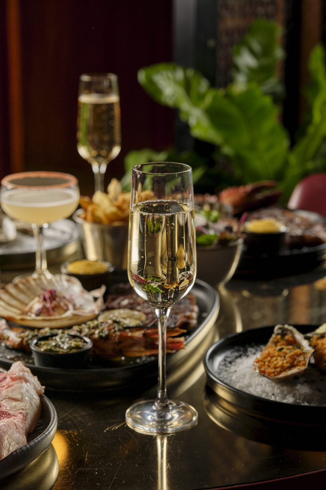

Two Angel Court, four minutes from Bank. The bigger of our two rooms, a mezzanine with its own bar, and on Saturdays, lobster and steak over embers.
Bank 4 min · Moorgate 5 min · Liverpool St 8 min
Royal Exchange 3 min, Threadneedle Street 2 min, St Paul's 10 min.

Mezzanine for 50 with its own bar, or the whole place for 240. Private hire →




"Dry-aged beef over open fire. You taste the difference immediately. Service was spot on."
"Few rooms in town smell, sound or taste this good. Perfect City lunch spot."
"Great for a team dinner near Bank. Steaks, tacos and sides all cooked over fire."
Confirmed in seconds. Free to cancel. Parties of 8 or fewer via OpenTable; 9+ via DesignMyNight.
Parties of 9+ · Soho · City · Bar-B-Q & Crabshack · Opening list